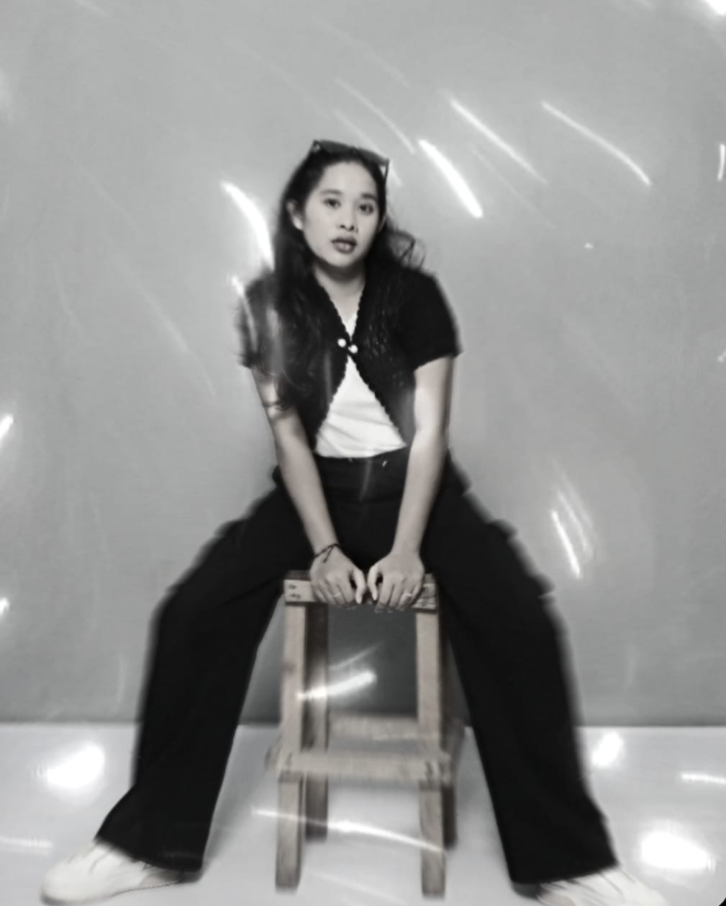
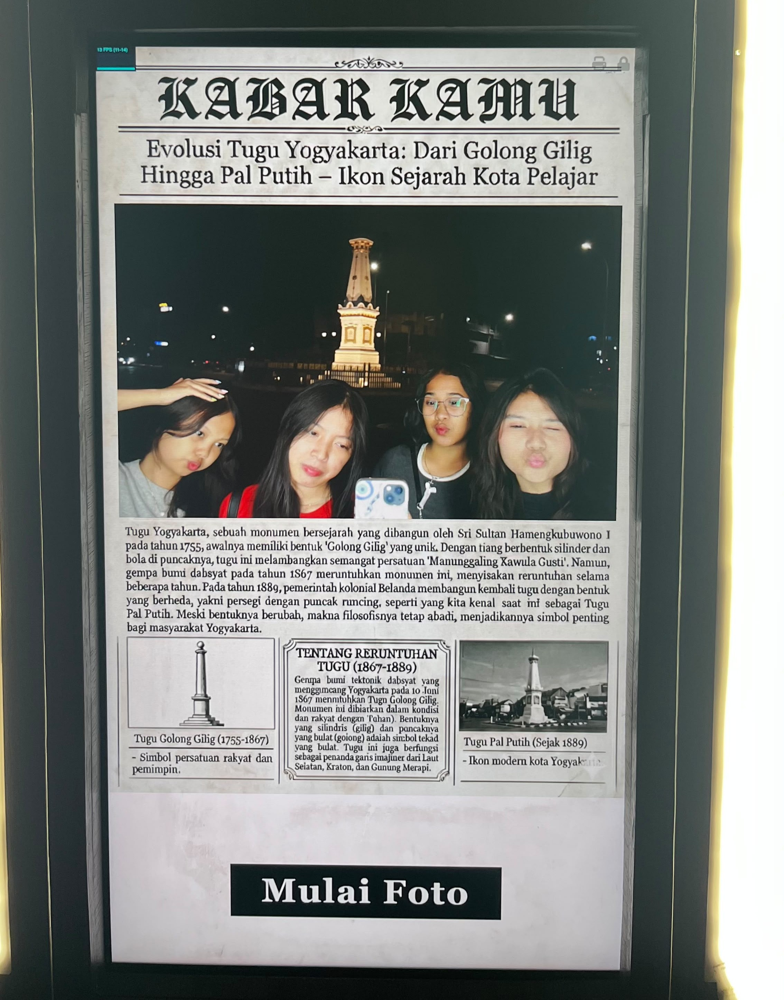
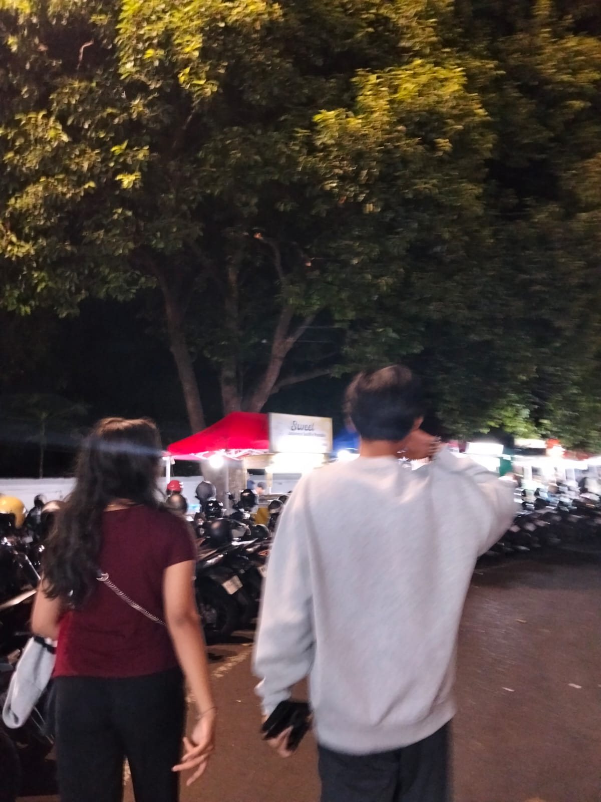
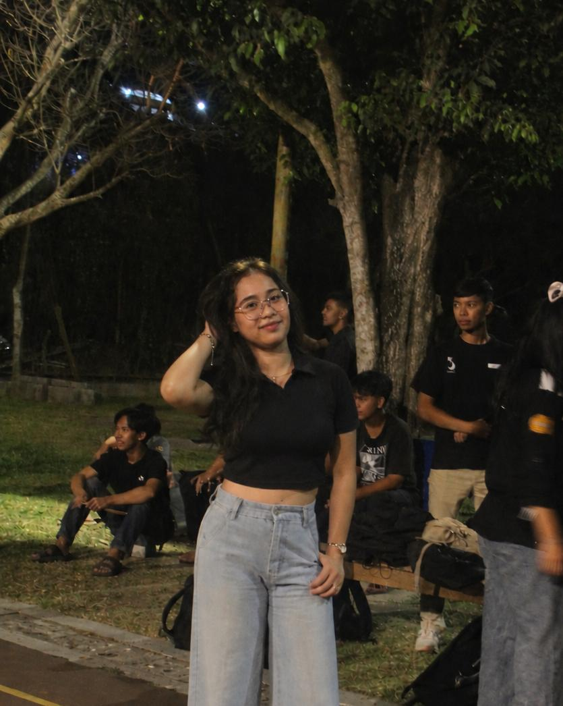
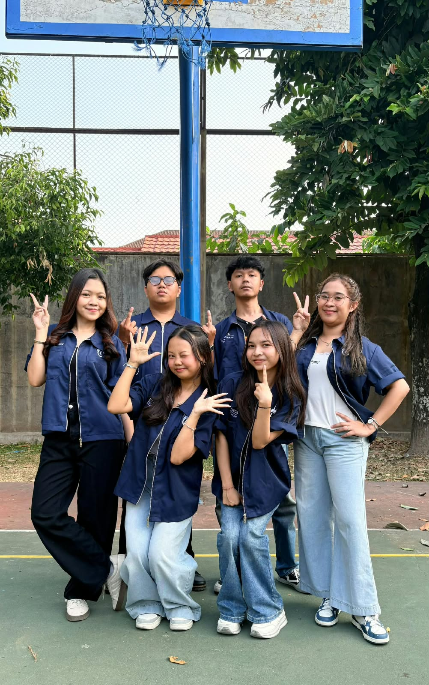

Saya sedang belajar HTML dan Git, selain itu saya juga ingin belajar banyak hal. Saya ingin menjadi programmer yang handal.
Saya suka musik, bernyanyi, dan ada banyak hal yang saya suka. Selain itu, saya juga suka menonton film dan bermain game. Saya ingin menjadi seorang programmer yang handal dan bisa membuat aplikasi yang bermanfaat bagi banyak orang. Namun yang paling penting adalah saya ingin menjadi pribadi yang baik dan bermanfaat bagi orang lain.
Hobi saya adalah mendengarkan musik, bernyanyi, menonton film, dan memasak. Saya suka mendengarkan musik karena musik bisa membuat saya merasa lebih baik dan bisa menghilangkan stres. Selain itu, saya juga suka bernyanyi karena bernyanyi bisa membuat saya merasa lebih bahagia. Menonton film juga menjadi salah satu hobi saya karena saya suka menonton film yang menarik dan bisa membuat saya terhibur. Terakhir, saya juga suka memasak karena memasak bisa membuat saya merasa lebih kreatif dan bisa membuat makanan yang enak.
Aktivitas saya sehari-hari adalah kuliah, mengerjakan tugas, bermain dengan teman, dan tidur. Saya kuliah setiap hari Senin sampai Jumat, dan mengerjakan tugas setiap hari Sabtu dan Minggu. Selain itu, saya juga suka bermain dengan teman-teman saya di waktu luang. Terakhir, saya juga suka tidur karena tidur bisa membuat saya merasa lebih segar dan siap untuk menghadapi aktivitas selanjutnya.





Saya belajar HTML dan CSS di W3Schools. selain itu, saya juga belajar di YouTube.
Berikut adalah jadwal kegiatan saya selama seminggu:
| No | Hari | Kegiatan | Waktu |
|---|---|---|---|
| 1 | Senin | Kuliah | 08:00 - 12:00 |
| 2 | Selasa | kuliah padat | Seharian |
| 3 | Rabu | Mengerjakan tugas | 10:00 - 12:00 |
| 4 | Kamis | Bermain dengan teman | 14:00 - 16:00 |
| 5 | Jumat | Belajar | 08:00 - 12:00 |
| 6 | Sabtu | Mengerjakan tugas | 10:00 - 12:00 |
| 7 | Minggu | Istirahat | Seharian |
Terima kasih telah mengunjungi halaman tentang saya!